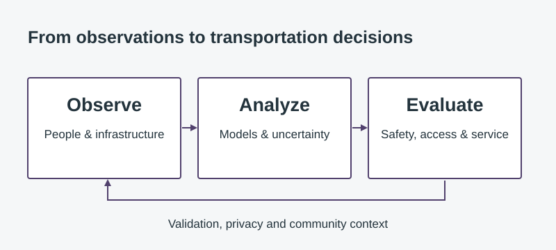

Journal article · 2026
Shared micromobility use in Tacoma
Neighborhood-level analysis of e-bike and e-scooter use in a mid-sized city.
 TALISTransportation Analytics, Learning
TALISTransportation Analytics, LearningDr. Angela Kitali’s research group
Traveler response, shared-mobility use and public acceptance of automated vehicles, with attention to experience, context and policy.
A transportation technology changes a system only through the people and organizations using it. We study how road users respond to warnings, interact with new vehicles and choose among mobility options. Research combines field observations, surveys and statistical learning to examine variation across travelers and settings. This behavioral perspective connects technology performance with comfort, adoption and actual use.
Shared-micromobility research examines neighborhood differences in Tacoma e-bike and e-scooter use through Bayesian quantile regression. Other studies investigate older adults’ comfort around autonomous vehicles, acceptance of autonomous shuttles and attitudes toward automated large trucks. Work on inclusive micromobility programs examines the specificity of pricing, vehicle and service-area provisions. These studies distinguish reported attitudes, observed use and program policy, each of which answers a different question about adoption.
Longer-term questions concern how experience, communication and local context shape trust, adoption and continued use of automated systems. The same human-centered perspective extends to AI in transportation practice. We are interested in how analysts and operators combine model outputs with professional knowledge, recognize uncertainty and retain responsibility for consequential decisions. Studies of these interactions can examine comprehension, response, error detection and the conditions under which analytical assistance improves a transportation task.

Journal article · 2026
Neighborhood-level analysis of e-bike and e-scooter use in a mid-sized city.
Published evaluations · 2017–2023
Pedestrian countdown signals, adaptive signal control and transit priority evaluated through crash-type-specific evidence.
Final report · September 2024
Evaluation of in-cab congestion and sudden-slowdown alerts on Ohio highways.
These publications examine neighborhood use patterns, older adults’ comfort around autonomous vehicles and acceptance of autonomous shuttles. Public working papers on mobility policy are listed separately under Resources.
@article{101016jcities2026107065,
title = {A Bayesian quantile-based analysis of micromobility usage and challenges},
author = {Panick Kalambay and Matthew Ford and Angela Kitali and Abdul Ngereza and Emmanuel Kidando and Jeffrey P. Walters and Heather Dillon},
journal = {Cities},
year = {2026},
volume = {174},
pages = {107065},
doi = {10.1016/j.cities.2026.107065}
}@article{101016jjth2026102279,
title = {Older adults and comfort in sharing the road alongside autonomous vehicles: An examination of travel stress, labeling, and dedicated lanes},
author = {Panick Kalambay and Murungi Elisabeth Mwebessa and Subasish Das and Angela Kitali},
journal = {Journal of Transport & Health},
year = {2026},
volume = {48},
pages = {102279},
doi = {10.1016/j.jth.2026.102279}
}@article{101016jcstp2026101719,
title = {Autonomous shuttles in the public eye: mediators on the path to successful expansion},
author = {Panick Kalambay and Norris Novat and Boniphace Kutela and Abimbola Ogungbire and Angela Kitali and Emmanuel Kidando},
journal = {Case Studies on Transport Policy},
year = {2026},
volume = {23},
pages = {101719},
doi = {10.1016/j.cstp.2026.101719}
}